Shujin's Academy student council president.
Dropping her mask of an honor student, she joins the group.
PRIESTESS ARCANA SKILLS
PRIESTESS ARCANA PERSONAS
PRIESTESS ARCANA SKILLS
| Rank | Name | Effect |
|---|---|---|
| 1 | Shadow Calculus | Allows you to see skills and potential item drops on the analysis screen. |
| 2 | Baton Pass | Allows you to pass your turn over to other Baton Pass users after a 1 More. |
| 3 | Black Belt Tank | If negotiation with a martial arts-using Shadow fails, you can try again. |
| 4 | Follow Up | Chance to perform a follow-up attack if Joker’s attack does not down the enemy. |
| 5 | - | - |
| 6 | Harisen Recovery | Chance to cure status ailments inflicted upon party members. |
| 7 | Shadow Factorization | Allows you to see Null, Repel, and Drain when highlighting a target in a battle. |
| 8 | Endure | Chance to withstand an otherwise fatal attack with 1 HP remaining. |
| 9 | Protect | Chance to shield Joker from an otherwise fatal attack. |
| 10 | Second Awakening |
Makoto’s Persona, Johanna, transforms into Anat |
| 11 (P5R) | Third Awakening |
Anat transforms into Agnes |
PRIESTESS ARCANA PERSONAS
Johanna
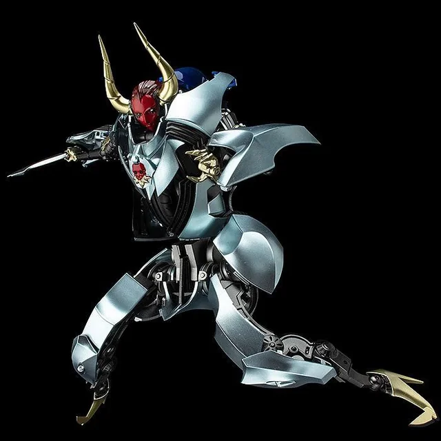 Anat
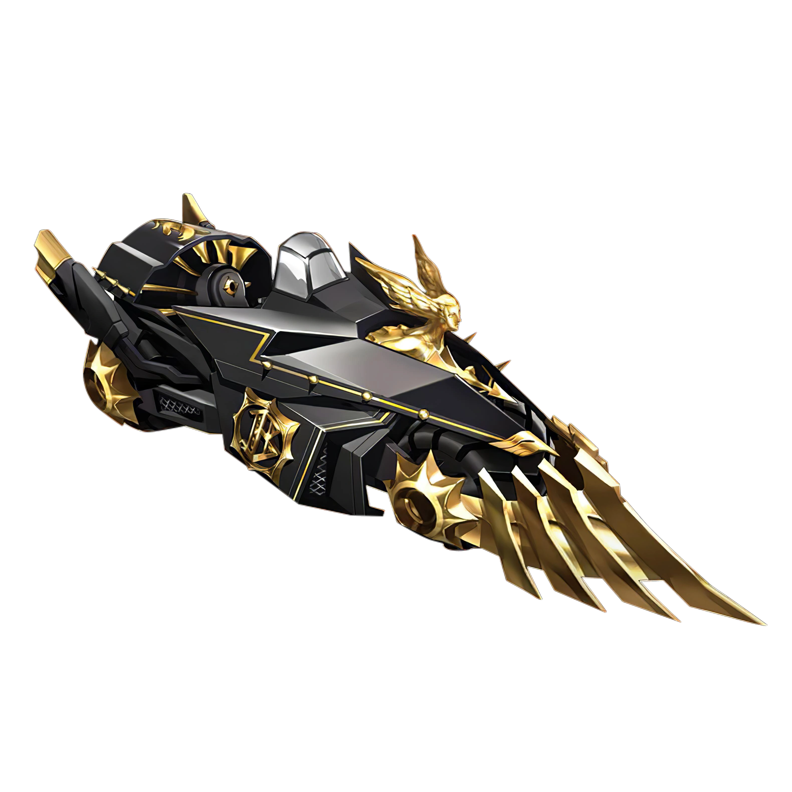 Agnes
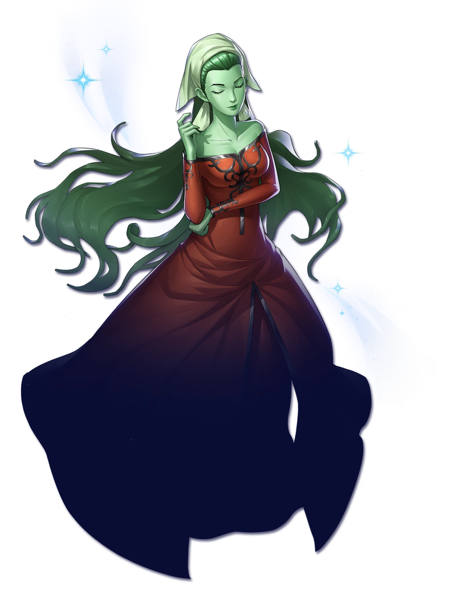 Silky
Apsaras
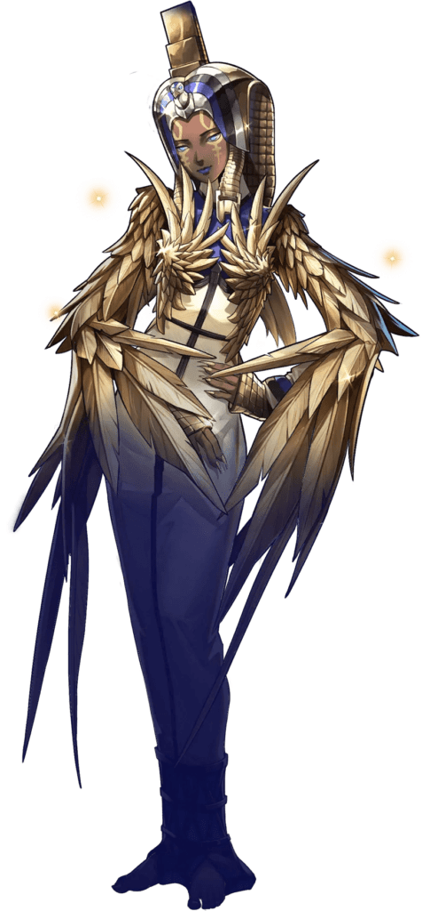 Isis 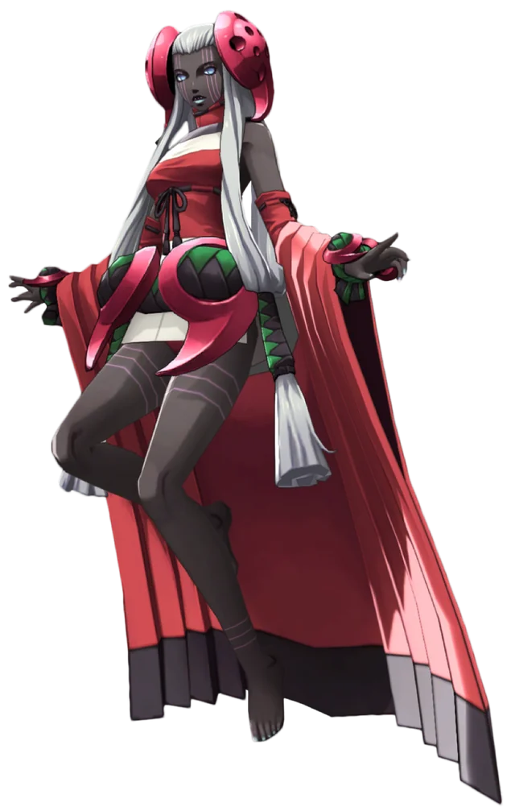 Kikuri-Hime 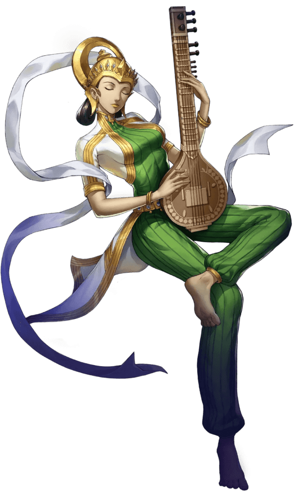 Sarasvati 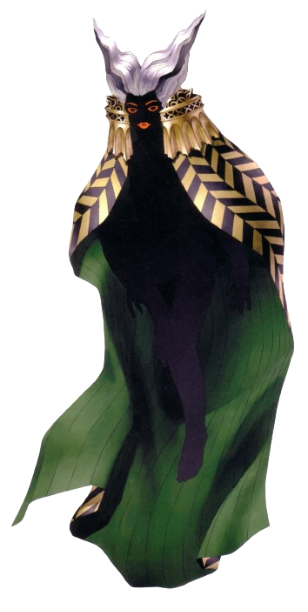 Skadi Scathach 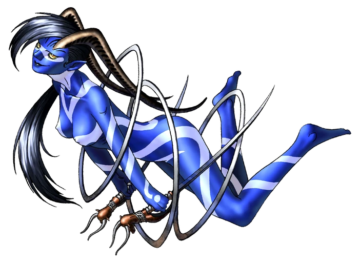 Cybele Koh-i-Noor
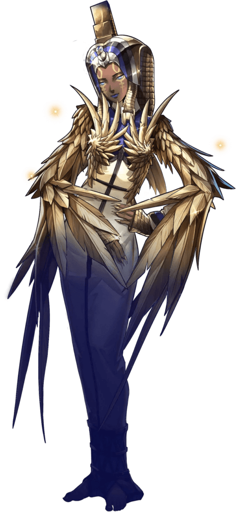 Isis 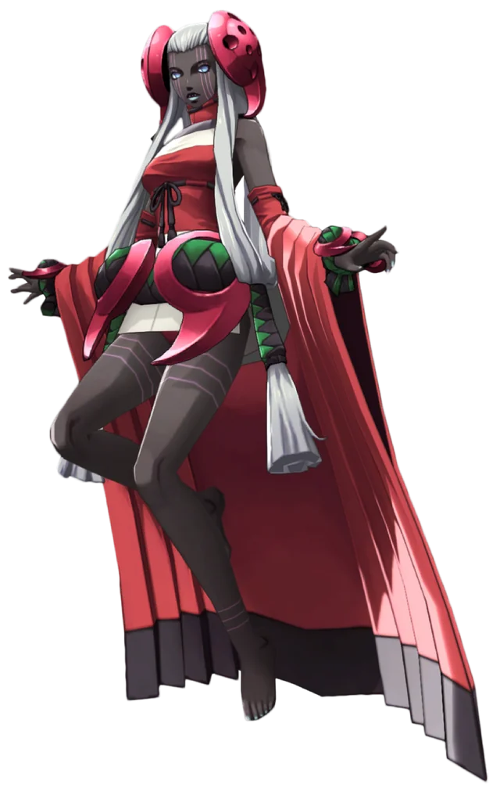 Kikuri-Hime 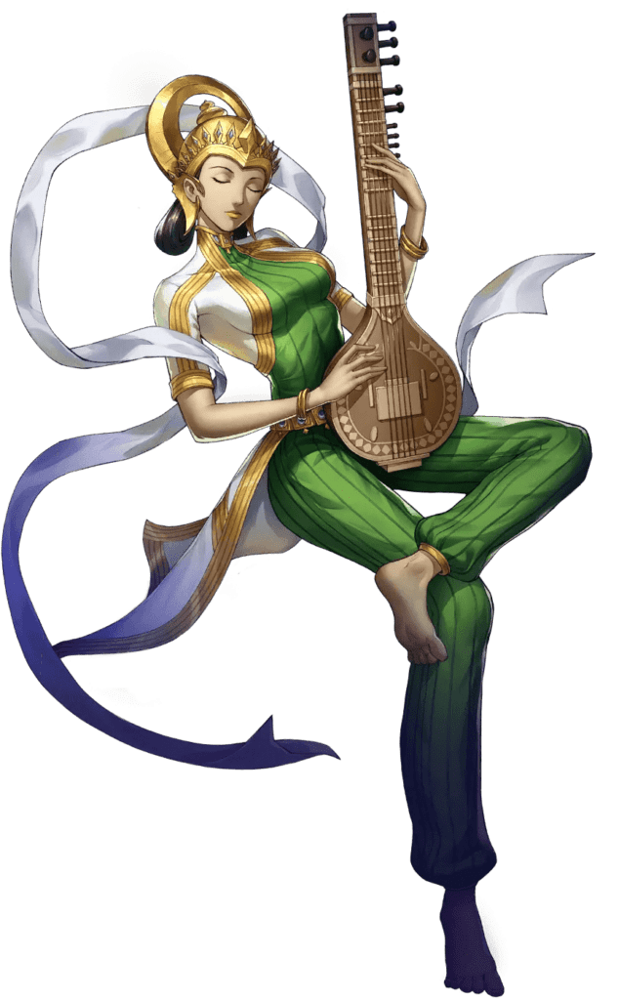 Sarasvati 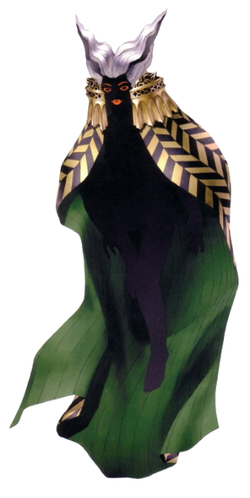 Skadi Scathach 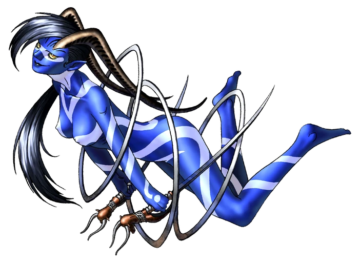 Cybele Koh-i-Noor